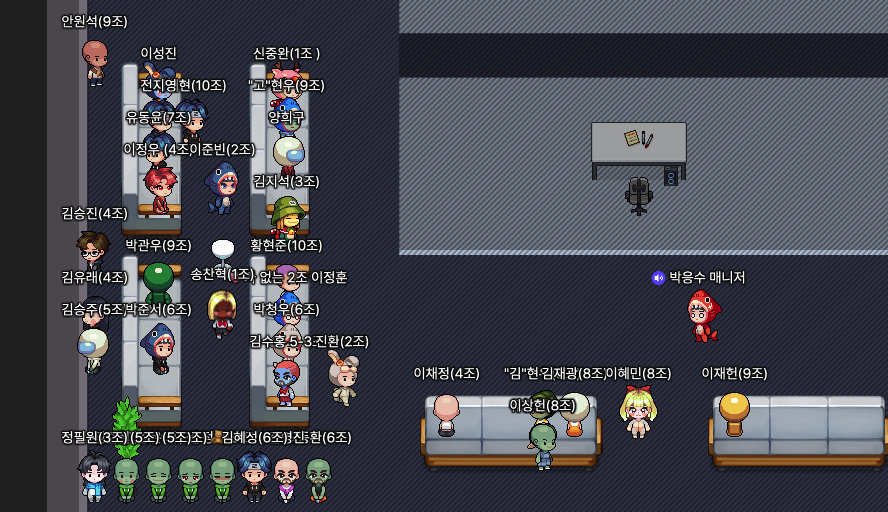

Spring Security, Multi Filter Chain, Swagger
오늘 한것
- 스프링 시큐리티 스웨거 추가, 설정
- 개인과제 진행
개인과제 요구사항
- 각 유저별 게시글 좋아요 스위칭.
- 각 유저별 댓글 좋아요 스위칭. 기능을 넣었다.
- AOP 활용하여 원래 코드 변경하기
그리고 13시30분 스프링 숙련주차는 끝나 지 않았지만 실전 프로젝트 팀빌딩 발제가 있었다.

잽에서 상당히 끊기는 ㄴ부분이 많아서
11기가 게더타운으로 이동했다!!
AOP로 인증로직을 구현해주는 스프링에서 제공해주는 @validate를 이미 사용해놨
알게모르게 AOP를 사용하고 있었다
Va
익셉션으로 상용해봥싿.
오늘안에는 개인 과제를 꼭 끝내고 남은 공부 정리를 좀 해야겠다!
1일 1에러 1해결
개인과제 코드를 정리 하던 중 딱히 건든게 없는데 아래와 같은 에러가 발생!
에러 보기
Error starting ApplicationContext. To display the conditions report re-run your application with 'debug' enabled.
2023-01-10 19:10:30.883 ERROR 7058 --- [ restartedMain] o.s.boot.SpringApplication : Application run failed
org.springframework.beans.factory.UnsatisfiedDependencyException: Error creating bean with name 'testDataRunner' defined in file [/Users/hyunjun/Library/Mobile Documents/com~apple~CloudDocs/IT/Spring_Deeping_Week_Assignment/build/classes/java/main/com/sparta/spring_deeping_week_assignment/TestDataRunner.class]: Unsatisfied dependency expressed through constructor parameter 1; nested exception is org.springframework.beans.factory.UnsatisfiedDependencyException: Error creating bean with name 'webSecurityConfig' defined in file [/Users/hyunjun/Library/Mobile Documents/com~apple~CloudDocs/IT/Spring_Deeping_Week_Assignment/build/classes/java/main/com/sparta/spring_deeping_week_assignment/config/WebSecurityConfig.class]: Unsatisfied dependency expressed through constructor parameter 0; nested exception is org.springframework.beans.factory.BeanCreationException: Error creating bean with name 'jwtUtil': Invocation of init method failed; nested exception is io.jsonwebtoken.security.WeakKeyException: The specified key byte array is 192 bits which is not secure enough for any JWT HMAC-SHA algorithm. The JWT JWA Specification (RFC 7518, Section 3.2) states that keys used with HMAC-SHA algorithms MUST have a size >= 256 bits (the key size must be greater than or equal to the hash output size). Consider using the io.jsonwebtoken.security.Keys#secretKeyFor(SignatureAlgorithm) method to create a key guaranteed to be secure enough for your preferred HMAC-SHA algorithm. See https://tools.ietf.org/html/rfc7518#section-3.2 for more information.
at org.springframework.beans.factory.support.ConstructorResolver.createArgumentArray(ConstructorResolver.java:800) ~[spring-beans-5.3.24.jar:5.3.24]
at org.springframework.beans.factory.support.ConstructorResolver.autowireConstructor(ConstructorResolver.java:229) ~[spring-beans-5.3.24.jar:5.3.24]
at org.springframework.beans.factory.support.AbstractAutowireCapableBeanFactory.autowireConstructor(AbstractAutowireCapableBeanFactory.java:1372) ~[spring-beans-5.3.24.jar:5.3.24]
at org.springframework.beans.factory.support.AbstractAutowireCapableBeanFactory.createBeanInstance(AbstractAutowireCapableBeanFactory.java:1222) ~[spring-beans-5.3.24.jar:5.3.24]
at org.springframework.beans.factory.support.AbstractAutowireCapableBeanFactory.doCreateBean(AbstractAutowireCapableBeanFactory.java:582) ~[spring-beans-5.3.24.jar:5.3.24]
at org.springframework.beans.factory.support.AbstractAutowireCapableBeanFactory.createBean(AbstractAutowireCapableBeanFactory.java:542) ~[spring-beans-5.3.24.jar:5.3.24]
at org.springframework.beans.factory.support.AbstractBeanFactory.lambda$doGetBean$0(AbstractBeanFactory.java:335) ~[spring-beans-5.3.24.jar:5.3.24]
at org.springframework.beans.factory.support.DefaultSingletonBeanRegistry.getSingleton(DefaultSingletonBeanRegistry.java:234) ~[spring-beans-5.3.24.jar:5.3.24]
at org.springframework.beans.factory.support.AbstractBeanFactory.doGetBean(AbstractBeanFactory.java:333) ~[spring-beans-5.3.24.jar:5.3.24]
at org.springframework.beans.factory.support.AbstractBeanFactory.getBean(AbstractBeanFactory.java:208) ~[spring-beans-5.3.24.jar:5.3.24]
at org.springframework.beans.factory.support.DefaultListableBeanFactory.preInstantiateSingletons(DefaultListableBeanFactory.java:955) ~[spring-beans-5.3.24.jar:5.3.24]
at org.springframework.context.support.AbstractApplicationContext.finishBeanFactoryInitialization(AbstractApplicationContext.java:918) ~[spring-context-5.3.24.jar:5.3.24]
at org.springframework.context.support.AbstractApplicationContext.refresh(AbstractApplicationContext.java:583) ~[spring-context-5.3.24.jar:5.3.24]
at org.springframework.boot.web.servlet.context.ServletWebServerApplicationContext.refresh(ServletWebServerApplicationContext.java:147) ~[spring-boot-2.7.7.jar:2.7.7]
at org.springframework.boot.SpringApplication.refresh(SpringApplication.java:731) ~[spring-boot-2.7.7.jar:2.7.7]
at org.springframework.boot.SpringApplication.refreshContext(SpringApplication.java:408) ~[spring-boot-2.7.7.jar:2.7.7]
at org.springframework.boot.SpringApplication.run(SpringApplication.java:307) ~[spring-boot-2.7.7.jar:2.7.7]
at org.springframework.boot.SpringApplication.run(SpringApplication.java:1303) ~[spring-boot-2.7.7.jar:2.7.7]
at org.springframework.boot.SpringApplication.run(SpringApplication.java:1292) ~[spring-boot-2.7.7.jar:2.7.7]
at com.sparta.spring_deeping_week_assignment.SpringDeepingWeekAssignmentApplication.main(SpringDeepingWeekAssignmentApplication.java:14) ~[main/:na]
at java.base/jdk.internal.reflect.NativeMethodAccessorImpl.invoke0(Native Method) ~[na:na]
at java.base/jdk.internal.reflect.NativeMethodAccessorImpl.invoke(NativeMethodAccessorImpl.java:62) ~[na:na]
at java.base/jdk.internal.reflect.DelegatingMethodAccessorImpl.invoke(DelegatingMethodAccessorImpl.java:43) ~[na:na]
at java.base/java.lang.reflect.Method.invoke(Method.java:566) ~[na:na]
at org.springframework.boot.devtools.restart.RestartLauncher.run(RestartLauncher.java:49) ~[spring-boot-devtools-2.7.7.jar:2.7.7]
Caused by: org.springframework.beans.factory.UnsatisfiedDependencyException: Error creating bean with name 'webSecurityConfig' defined in file [/Users/hyunjun/Library/Mobile Documents/com~apple~CloudDocs/IT/Spring_Deeping_Week_Assignment/build/classes/java/main/com/sparta/spring_deeping_week_assignment/config/WebSecurityConfig.class]: Unsatisfied dependency expressed through constructor parameter 0; nested exception is org.springframework.beans.factory.BeanCreationException: Error creating bean with name 'jwtUtil': Invocation of init method failed; nested exception is io.jsonwebtoken.security.WeakKeyException: The specified key byte array is 192 bits which is not secure enough for any JWT HMAC-SHA algorithm. The JWT JWA Specification (RFC 7518, Section 3.2) states that keys used with HMAC-SHA algorithms MUST have a size >= 256 bits (the key size must be greater than or equal to the hash output size). Consider using the io.jsonwebtoken.security.Keys#secretKeyFor(SignatureAlgorithm) method to create a key guaranteed to be secure enough for your preferred HMAC-SHA algorithm. See https://tools.ietf.org/html/rfc7518#section-3.2 for more information.
at org.springframework.beans.factory.support.ConstructorResolver.createArgumentArray(ConstructorResolver.java:800) ~[spring-beans-5.3.24.jar:5.3.24]
at org.springframework.beans.factory.support.ConstructorResolver.autowireConstructor(ConstructorResolver.java:229) ~[spring-beans-5.3.24.jar:5.3.24]
at org.springframework.beans.factory.support.AbstractAutowireCapableBeanFactory.autowireConstructor(AbstractAutowireCapableBeanFactory.java:1372) ~[spring-beans-5.3.24.jar:5.3.24]
at org.springframework.beans.factory.support.AbstractAutowireCapableBeanFactory.createBeanInstance(AbstractAutowireCapableBeanFactory.java:1222) ~[spring-beans-5.3.24.jar:5.3.24]
at org.springframework.beans.factory.support.AbstractAutowireCapableBeanFactory.doCreateBean(AbstractAutowireCapableBeanFactory.java:582) ~[spring-beans-5.3.24.jar:5.3.24]
at org.springframework.beans.factory.support.AbstractAutowireCapableBeanFactory.createBean(AbstractAutowireCapableBeanFactory.java:542) ~[spring-beans-5.3.24.jar:5.3.24]
at org.springframework.beans.factory.support.AbstractBeanFactory.lambda$doGetBean$0(AbstractBeanFactory.java:335) ~[spring-beans-5.3.24.jar:5.3.24]
at org.springframework.beans.factory.support.DefaultSingletonBeanRegistry.getSingleton(DefaultSingletonBeanRegistry.java:234) ~[spring-beans-5.3.24.jar:5.3.24]
at org.springframework.beans.factory.support.AbstractBeanFactory.doGetBean(AbstractBeanFactory.java:333) ~[spring-beans-5.3.24.jar:5.3.24]
at org.springframework.beans.factory.support.AbstractBeanFactory.getBean(AbstractBeanFactory.java:208) ~[spring-beans-5.3.24.jar:5.3.24]
at org.springframework.beans.factory.support.ConstructorResolver.instantiateUsingFactoryMethod(ConstructorResolver.java:410) ~[spring-beans-5.3.24.jar:5.3.24]
at org.springframework.beans.factory.support.AbstractAutowireCapableBeanFactory.instantiateUsingFactoryMethod(AbstractAutowireCapableBeanFactory.java:1352) ~[spring-beans-5.3.24.jar:5.3.24]
at org.springframework.beans.factory.support.AbstractAutowireCapableBeanFactory.createBeanInstance(AbstractAutowireCapableBeanFactory.java:1195) ~[spring-beans-5.3.24.jar:5.3.24]
at org.springframework.beans.factory.support.AbstractAutowireCapableBeanFactory.doCreateBean(AbstractAutowireCapableBeanFactory.java:582) ~[spring-beans-5.3.24.jar:5.3.24]
at org.springframework.beans.factory.support.AbstractAutowireCapableBeanFactory.createBean(AbstractAutowireCapableBeanFactory.java:542) ~[spring-beans-5.3.24.jar:5.3.24]
at org.springframework.beans.factory.support.AbstractBeanFactory.lambda$doGetBean$0(AbstractBeanFactory.java:335) ~[spring-beans-5.3.24.jar:5.3.24]
at org.springframework.beans.factory.support.DefaultSingletonBeanRegistry.getSingleton(DefaultSingletonBeanRegistry.java:234) ~[spring-beans-5.3.24.jar:5.3.24]
at org.springframework.beans.factory.support.AbstractBeanFactory.doGetBean(AbstractBeanFactory.java:333) ~[spring-beans-5.3.24.jar:5.3.24]
at org.springframework.beans.factory.support.AbstractBeanFactory.getBean(AbstractBeanFactory.java:208) ~[spring-beans-5.3.24.jar:5.3.24]
at org.springframework.beans.factory.config.DependencyDescriptor.resolveCandidate(DependencyDescriptor.java:276) ~[spring-beans-5.3.24.jar:5.3.24]
at org.springframework.beans.factory.support.DefaultListableBeanFactory.doResolveDependency(DefaultListableBeanFactory.java:1391) ~[spring-beans-5.3.24.jar:5.3.24]
at org.springframework.beans.factory.support.DefaultListableBeanFactory.resolveDependency(DefaultListableBeanFactory.java:1311) ~[spring-beans-5.3.24.jar:5.3.24]
at org.springframework.beans.factory.support.ConstructorResolver.resolveAutowiredArgument(ConstructorResolver.java:887) ~[spring-beans-5.3.24.jar:5.3.24]
at org.springframework.beans.factory.support.ConstructorResolver.createArgumentArray(ConstructorResolver.java:791) ~[spring-beans-5.3.24.jar:5.3.24]
... 24 common frames omitted
Caused by: org.springframework.beans.factory.BeanCreationException: Error creating bean with name 'jwtUtil': Invocation of init method failed; nested exception is io.jsonwebtoken.security.WeakKeyException: The specified key byte array is 192 bits which is not secure enough for any JWT HMAC-SHA algorithm. The JWT JWA Specification (RFC 7518, Section 3.2) states that keys used with HMAC-SHA algorithms MUST have a size >= 256 bits (the key size must be greater than or equal to the hash output size). Consider using the io.jsonwebtoken.security.Keys#secretKeyFor(SignatureAlgorithm) method to create a key guaranteed to be secure enough for your preferred HMAC-SHA algorithm. See https://tools.ietf.org/html/rfc7518#section-3.2 for more information.
at org.springframework.beans.factory.annotation.InitDestroyAnnotationBeanPostProcessor.postProcessBeforeInitialization(InitDestroyAnnotationBeanPostProcessor.java:160) ~[spring-beans-5.3.24.jar:5.3.24]
at org.springframework.beans.factory.support.AbstractAutowireCapableBeanFactory.applyBeanPostProcessorsBeforeInitialization(AbstractAutowireCapableBeanFactory.java:440) ~[spring-beans-5.3.24.jar:5.3.24]
at org.springframework.beans.factory.support.AbstractAutowireCapableBeanFactory.initializeBean(AbstractAutowireCapableBeanFactory.java:1796) ~[spring-beans-5.3.24.jar:5.3.24]
at org.springframework.beans.factory.support.AbstractAutowireCapableBeanFactory.doCreateBean(AbstractAutowireCapableBeanFactory.java:620) ~[spring-beans-5.3.24.jar:5.3.24]
at org.springframework.beans.factory.support.AbstractAutowireCapableBeanFactory.createBean(AbstractAutowireCapableBeanFactory.java:542) ~[spring-beans-5.3.24.jar:5.3.24]
at org.springframework.beans.factory.support.AbstractBeanFactory.lambda$doGetBean$0(AbstractBeanFactory.java:335) ~[spring-beans-5.3.24.jar:5.3.24]
at org.springframework.beans.factory.support.DefaultSingletonBeanRegistry.getSingleton(DefaultSingletonBeanRegistry.java:234) ~[spring-beans-5.3.24.jar:5.3.24]
at org.springframework.beans.factory.support.AbstractBeanFactory.doGetBean(AbstractBeanFactory.java:333) ~[spring-beans-5.3.24.jar:5.3.24]
at org.springframework.beans.factory.support.AbstractBeanFactory.getBean(AbstractBeanFactory.java:208) ~[spring-beans-5.3.24.jar:5.3.24]
at org.springframework.beans.factory.config.DependencyDescriptor.resolveCandidate(DependencyDescriptor.java:276) ~[spring-beans-5.3.24.jar:5.3.24]
at org.springframework.beans.factory.support.DefaultListableBeanFactory.doResolveDependency(DefaultListableBeanFactory.java:1391) ~[spring-beans-5.3.24.jar:5.3.24]
at org.springframework.beans.factory.support.DefaultListableBeanFactory.resolveDependency(DefaultListableBeanFactory.java:1311) ~[spring-beans-5.3.24.jar:5.3.24]
at org.springframework.beans.factory.support.ConstructorResolver.resolveAutowiredArgument(ConstructorResolver.java:887) ~[spring-beans-5.3.24.jar:5.3.24]
at org.springframework.beans.factory.support.ConstructorResolver.createArgumentArray(ConstructorResolver.java:791) ~[spring-beans-5.3.24.jar:5.3.24]
... 47 common frames omitted
Caused by: io.jsonwebtoken.security.WeakKeyException: The specified key byte array is 192 bits which is not secure enough for any JWT HMAC-SHA algorithm. The JWT JWA Specification (RFC 7518, Section 3.2) states that keys used with HMAC-SHA algorithms MUST have a size >= 256 bits (the key size must be greater than or equal to the hash output size). Consider using the io.jsonwebtoken.security.Keys#secretKeyFor(SignatureAlgorithm) method to create a key guaranteed to be secure enough for your preferred HMAC-SHA algorithm. See https://tools.ietf.org/html/rfc7518#section-3.2 for more information.
at io.jsonwebtoken.security.Keys.hmacShaKeyFor(Keys.java:96) ~[jjwt-api-0.11.2.jar:0.11.2]
at com.sparta.spring_deeping_week_assignment.jwt.JwtUtil.init(JwtUtil.java:43) ~[main/:na]
at java.base/jdk.internal.reflect.NativeMethodAccessorImpl.invoke0(Native Method) ~[na:na]
at java.base/jdk.internal.reflect.NativeMethodAccessorImpl.invoke(NativeMethodAccessorImpl.java:62) ~[na:na]
at java.base/jdk.internal.reflect.DelegatingMethodAccessorImpl.invoke(DelegatingMethodAccessorImpl.java:43) ~[na:na]
at java.base/java.lang.reflect.Method.invoke(Method.java:566) ~[na:na]
at org.springframework.beans.factory.annotation.InitDestroyAnnotationBeanPostProcessor$LifecycleElement.invoke(InitDestroyAnnotationBeanPostProcessor.java:389) ~[spring-beans-5.3.24.jar:5.3.24]
at org.springframework.beans.factory.annotation.InitDestroyAnnotationBeanPostProcessor$LifecycleMetadata.invokeInitMethods(InitDestroyAnnotationBeanPostProcessor.java:333) ~[spring-beans-5.3.24.jar:5.3.24]
at org.springframework.beans.factory.annotation.InitDestroyAnnotationBeanPostProcessor.postProcessBeforeInitialization(InitDestroyAnnotationBeanPostProcessor.java:157) ~[spring-beans-5.3.24.jar:5.3.24]
... 60 common frames omitted
안건들였는데 에러가 날리는 없지..
최근에 건들인 것을 찾다가..
Caused by: io.jsonwebtoken.security.WeakKeyException: The specified key byte array is 192 bits which is not secure enough for any JWT HMAC-SHA algorithm. The JWT JWA Specification (RFC 7518, Section 3.2) states that keys used with HMAC-SHA algorithms MUST have a size >= 256 bits (the key size must be greater than or equal to the hash output size). Consider using the io.jsonwebtoken.security.Keys#secretKeyFor(SignatureAlgorithm) method to create a key guaranteed to be secure enough for your preferred HMAC-SHA algorithm. See https://tools.ietf.org/html/rfc7518#section-3.2 for more information.
에러메세지중 위의 글을 보니, 대충 json key가 사이즈가 작다? 이런느낌같에서
jwt.secret.key=sqkodqkfoko2k9qwldaasldqw2102lqd
에서 1.5배 정도 길게 바꿔주니 동작한다!
아마 jsonwebtoken에서 >= 256 bits으로 만들어야 만들어지게 해논것 같다!
그리고, 스프링 시큐리티를 처음 배울때부터 멀티필터체인을 만들어보고싶었는데 적용이안되나싶어서 정말 처음으로 문제 해결하는데 4일 정도 걸린것같다
문제는 체인이작동안하는게아닌 ADMIN을 안넣어줘서 동작이 안한겄!